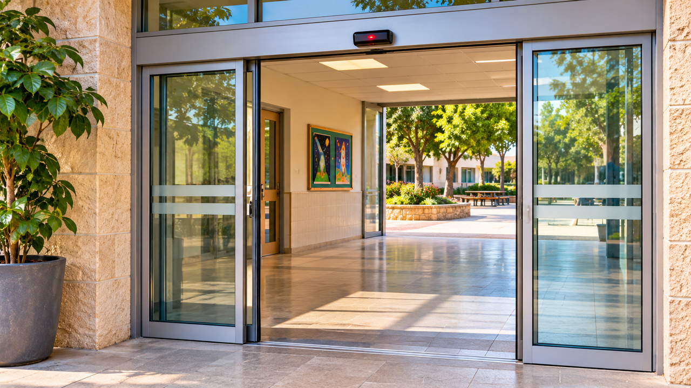

اكتشاف الأعطال
الباب الذي لا يُغلق
عطل، أم أنّ الباب يفعل بالضبط ما ينبغي؟

عند مدخل المكتبة
«نسي الباب أن يُغلق!» صاح يوفال البالغ إحدى عشرة سنة من مكتب الاستقبال في المكتبة المجتمعيّة. بقي باب الزجاج الأوتوماتيكيّ مفتوحًا حتّى بعد ابتعاد آخر الزائرين. دخل هواء حارّ من الخارج، وتطايرت بعض الأوراق على طاولة القراءة.
اتّصلت أمينة المكتبة بمسؤول الصيانة. اقترح يوفال بالفعل أن يختبروا ما يحدث إن وقفوا أمام الباب مرارًا، لكنّها أوقفته: لا يُعاد إنتاج عطل بطريقة قد تعرّض الزائرين للخطر أو تضرّ الآليّة. يُوثَّق ما يحدث في الاستخدام العاديّ.
لا يحدث في كلّ مرّة
بعد دقائق أُغلق الباب كالمعتاد. وحين وصل مسؤول الصيانة لم يظهر عطل؛ عالج ترتيبات السلامة عند المدخل وفق الإجراءات. نظر يوفال إلى الباب بتشكّك: كيف يُفهم شيء يتغيّر تحديدًا حين يصل من يفترض أن يفحصه؟
يروي يوفال أنّ الحدث يحدث أحيانًا حين يدخل عدّة زائرين واحدًا تلو الآخر، وأحيانًا حين يمرّ شخص واحد. وهو غير متأكّد كم مرّ من الوقت في كلّ حالة.
في اليوم التالي دخلت زائرة تمشي ببطء وتحمل كيسًا ثقيلًا. بقي الباب مفتوحًا حتّى عبرت بأمان — وهذا كان مرغوبًا تحديدًا. وبعد ساعة وصلت مجموعة أطفال، وبقي الباب مفتوحًا وقتًا طويلًا حتّى حين لم يُرَ أحد في الممرّ. تردّد يوفال: كيف نميّز بين زمن فتح مخصّص للسلامة وبين سلوك غير معتاد؟
فهم يوفال أنّ الهدف ليس «الإغلاق بأسرع ما يمكن». يحتاج النظام الجيّد إلى رصد مرور الناس والسماح بدخول آمن ومتاح، ثم العودة إلى الحالة المناسبة حين ينتهي المرور.
بيئة الباب
في أحد الأيّام تُوضع قرب الباب واجهة متنقّلة للكتب. وفي يوم آخر تُنقل الواجهة. وفي الفترة نفسها تهبّ ريح قويّة عند المدخل ويتغيّر عدد الزائرين بين الصباح وبعد الظهر.
يفهم يوفال أنّ هناك تفاصيل قد تؤثّر فيما يُرى. لكن لا يجوز الاستنتاج أنّ الكتب أو الريح هي السبب من دون معلومات إضافيّة.
من يحتاج الجواب
تريد أمينة المكتبة مدخلًا متاحًا وآمنًا، لكنّها تريد أيضًا ألّا يبقى الباب مفتوحًا بلا حاجة حين يكون الجوّ حارًّا أو باردًا جدًّا في الخارج. ويحتاج عامل الصيانة أن يفهم متى يتغيّر السلوك كي يفحصه بأمان.
يفكّر يوفال في من يصلون إلى المكتبة: أطفال وبالغون ومستخدمو كراسي متحرّكة. ويجب أن يحافظ أيّ فحص على حرّيّة الوصول وألّا يعرّض أحدًا للخطر.
تسجيل لا يعيق
تبدأ أمينة المكتبة بتسجيل ساعات الأحداث وعدد الأشخاص في المنطقة، من دون تصوير وجوه أو حفظ تفاصيل معرِّفة للزوّار. وهي لا تسدّ الباب لمحاولة إعادة إنتاج عطل.
يكتشف يوفال أنّ التوثيق يجب أن يكون مفيدًا ومسؤولًا معًا. يمكن التعلّم عن سلوك نظام من دون جمع معلومات شخصيّة غير لازمة.
في المرّة التالية التي تصل فيها شكوى تسجّل أمينة المكتبة إن كان هناك أشخاص قرب الباب، وإن نُقلت أغراض كبيرة، وإن هبّت ريح. يتفاجأ يوفال بأنّ بعض الأحداث تحدث في أيّام مزدحمة وبعضها في ساعات هادئة.
«إذن لا يوجد نمط»، قال يوفال. «أو أنّنا لم نرصده بعد»، أجابت أمينة المكتبة. كانت على الصفحة أحداث قد تبدو متماثلة لكنّها حدثت في ظروف مختلفة. كانت الصعوبة التمييز بين عمل سليم وحالة تتطلّب فحصًا حقًّا.
بين الوصف والسبب
من المعروف أنّ الباب يكون مفتوحًا أحيانًا أكثر من المعتاد وأنّ الأحداث لا تظهر في كلّ مرور. وغير معروف أيّ جزء في النظام يُحدث التغيّر أو إن كان عملًا سليمًا في حالة معيّنة.
يفرّق يوفال بين جملتين: «بقي الباب مفتوحًا وقتًا طويلًا» وصف؛ و«المستشعر معطوب» تفسير لم يُثبت بعد.
قبل أن نبتكر
سيفحص مسؤول الصيانة الباب وفق الإجراءات. ويستطيع يوفال وأمينة المكتبة المساعدة فقط بجمع مراقبات آمنة وعرضها بوضوح.
أيّ توثيق يمكن أن يُظهر إن كانت الظاهرة تتكرّر في ظروف مشابهة؟ وأيّ بيانات غير لازمة؟ وكيف تخطّطون طريقة للإبلاغ عن تغيّر من دون المساس بسلامة الزائرين أو خصوصيّتهم؟
تلميح من عالم الفضاء
في المركبات الفضائيّة تُفحص حالات الأنظمة عبر بيانات تُجمع على امتداد الزمن. ليس كلّ تغيّر يدلّ فورًا على عطل؛ المهمّ التمييز بين حالة مخطّطة وقياس غير معتاد وسبب ينبغي بحثه.
بعد القراءة — في ورقة الفريق
تحدّثوا في الفريق وأجيبوا استنادًا إلى معلومات القصّة. إذا نقصت معلومة، اكتبوا سؤالًا للمتابعة.
- من تريدون مساعدته في القصّة؟
- ماذا يحاول أن يفعل وما الذي يصعّب عليه ذلك؟
- ما الذي يحتاج إلى أن يكون قادرًا على فعله؟
- ما الذي تريدون معرفته أيضًا قبل تطوير الأفكار؟